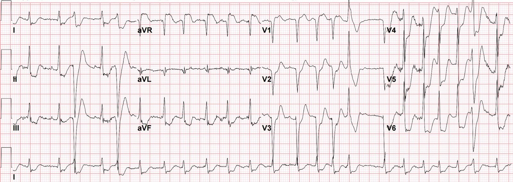
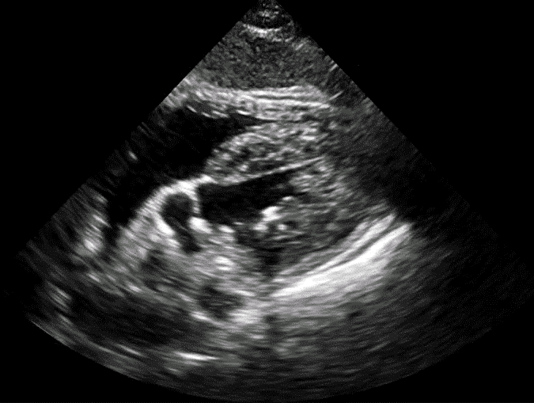
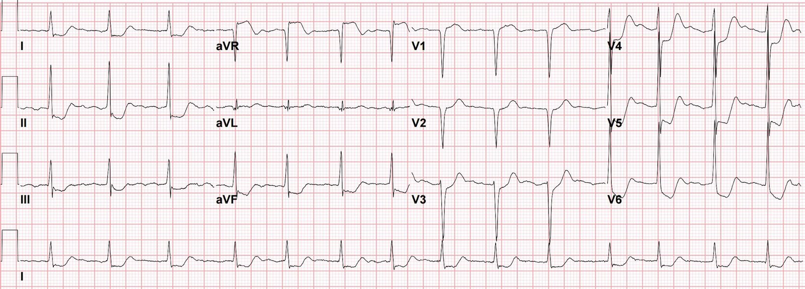

28/02/2018 — ST chênh lên ở aVR kèm ST chênh xuống lan tỏa: một hình ảnh điện tâm đồ bạn phải biết và hiểu!
Bản dịch tiếng Việt của bài "ST-Elevation in aVR with diffuse ST-Depression: An ECG pattern that you must know and understand!" – Dr. Smith’s ECG Blog. Giữ nguyên toàn bộ 3 hình ảnh của bản gốc.
Ca bệnh này do Sam Ghali cung cấp (@EM_RESUS).
Một người đàn ông 60 tuổi gọi 911 sau khi đột ngột đau ngực, hồi hộp đánh trống ngực và khó thở. Dưới đây là các dấu hiệu sinh tồn của ông:
Tần số tim (HR): 130-160, huyết áp (BP): 140/75, tần số thở (RR): 22, nhiệt độ: 98.5 F, SaO2: 98%
Đây là điện tâm đồ 12 chuyển đạo của ông:


thất nhanh, tần số khoảng 140 nhịp/phút. Có vài
nhát dẫn truyền lệch hướng. Có ST chênh lên ở aVR vài
milimét và ST chênh xuống lan tỏa, với vectơ chênh xuống tối đa
hướng về chuyển đạo II ở các chuyển đạo chi và hướng về V5 ở các chuyển đạo
trước tim.
Đọc điện tâm đồ suy cho cùng là nhận diện hình ảnh (pattern recognition). Và hình ảnh đặc biệt này – ST chênh lên ở aVR kèm ST chênh xuống lan tỏa – là một hình ảnh điện tâm đồ rất quan trọng mà bạn phải nhận ra được. Nhưng điều có lẽ còn quan trọng hơn cả việc nhận ra hình ảnh này là hiểu nó biểu thị điều gì. Dường như có một ngộ nhận phổ biến rằng ST chênh lên ở aVR trong ca này có thể biểu thị “STEMI”, tức thiếu máu cục bộ xuyên thành (toàn bộ bề dày) cấp. Nếu đúng như vậy, bệnh nhân rất có thể đã tử vong hoặc ít nhất cũng đang trong tình trạng sốc tim nặng. Mấu chốt để hiểu hình ảnh này biểu thị điều gì nằm ở chỗ hiểu rằng ST chênh lên ở aVR là soi gương của ST chênh xuống lan tỏa – và ST chênh xuống lan tỏa này biểu thị thiếu máu cục bộ dưới nội tâm mạc toàn bộ (global subendocardial ischemia)!
Vì vậy, câu hỏi thực sự mà bạn phải trả lời là:
Điều gì đang gây ra thiếu máu cục bộ dưới nội tâm mạc toàn bộ?
Điều cực kỳ quan trọng là phải nhận ra rằng trong phần lớn trường hợp, nguyên nhân là tăng gánh cơ tim toàn bộ do một căn nguyên không phải ACS !
(nhiễm khuẩn huyết nặng, nhịp nhanh, thiếu máu, giảm oxy máu, v.v.). Cũng rất
quan trọng là phải hiểu rằng trong các bối cảnh không phải ACS này, bạn có thể thấy
hình ảnh này dù có hay không có bệnh động mạch vành nền.
Nhưng
tất nhiên đó cũng có thể là ACS. Và nếu đúng vậy, thì bạn đang đối mặt với mảng xơ vữa mất ổn định ở thân chung
động mạch vành trái, LAD đoạn gần, hoặc thậm chí ở nhiều nhánh mạch vành. Nhưng hãy nhớ
rằng ngay cả khi đó là ACS, bạn vẫn đang đối mặt với thiếu máu cục bộ dưới nội tâm mạc chứ
không phải xuyên thành.
Đây là mặt cắt dưới sườn của siêu âm tim tại giường thực hiện trên bệnh nhân của chúng tôi tại khoa cấp cứu (ED):


Vậy
điều gì đang gây ra thiếu máu cục bộ dưới nội tâm mạc lan tỏa ở bệnh nhân của chúng tôi?
Khi tần số tim tăng đáng kể như trong ca này, thật
hợp lý khi nghi ngờ rằng thiếu máu cục bộ nhiều khả năng do nhịp nhanh gây ra,
tức “thiếu máu cục bộ do tăng nhu cầu” (demand ischemia). Vì vậy, với EF bình thường ghi nhận trên siêu âm tim (và nhân
tiện, tôi rất khuyến nghị đánh giá EF của bất kỳ bệnh nhân nào trước khi
quyết định cho bất kỳ thuốc giảm co bóp cơ tim nào), quyết định được
đưa ra là tiêm bolus rồi truyền liên tục Diltiazem và đánh giá lại sau khi
đã kiểm soát được tần số. Tần số
đã được kiểm soát khi tần số tim của bệnh nhân giảm rất tốt
xuống mức 80 mấy. Ông cảm thấy dễ chịu hơn nhiều và các triệu chứng gần như
hết hoàn toàn.
Bình luận của Smith: việc đánh giá thể tích tuần hoàn trước khi dùng thuốc giảm co bóp và thuốc giảm tần số tim cũng cực kỳ quan trọng. Nhịp nhanh này có thể là đáp ứng với tình trạng đổ đầy thất trái kém. Thật vậy, cả thất trái lẫn thất phải đều có vẻ không được đổ đầy tốt. Nếu rung nhĩ với RVR dẫn đến tần số nhanh tới mức chính tần số là nguyên nhân gây đổ đầy thất trái kém, thì phải có áp lực đổ đầy tăng, có thể có phù phổi, và có bằng chứng quá tải dịch. Đánh giá mức đổ đầy của tĩnh mạch chủ dưới (IVC) sẽ hữu ích, và nếu IVC xẹp, thì có chỉ định truyền dịch trước (hoặc truyền máu nếu đây là xuất huyết tiêu hóa). Nếu điều này không làm tần số tim chậm lại, thì khi đó mới có chỉ định thuốc ức chế nút AV, chẳng hạn Diltiazem.
Hơn nữa, vì bệnh nhân này không có tiền sử rung nhĩ, và đây là tình huống nguy kịch, sốc điện chuyển nhịp vừa an toàn hơn vừa hiệu quả hơn thuốc ức chế nút AV như Diltiazem.
Xem 2 bài này:
Atrial fibrillation with RVR: use POCUS to assess volume; then sinus vs. SVT: use of Lewis leads (Rung nhĩ với RVR: dùng POCUS để đánh giá thể tích tuần hoàn; sau đó nhịp xoang hay SVT: sử dụng chuyển đạo Lewis)
Atrial fibrillation with rapid ventricular response with ECG injury pattern (Rung nhĩ với đáp ứng thất nhanh kèm hình ảnh tổn thương trên điện tâm đồ)
Đây là điện tâm đồ ghi lại 25 phút sau điện tâm đồ đầu tiên:


nhịp. Nhưng bất chấp tần số tim giảm mạnh, hình ảnh
thiếu máu cục bộ dưới nội tâm mạc toàn bộ vẫn tồn tại! (ST chênh lên ở aVR kèm
ST chênh xuống lan tỏa có vectơ chênh xuống tối đa hướng về các chuyển đạo
II và V5)
Nếu
điện tâm đồ ghi lại này cho thấy hình ảnh thiếu máu cục bộ dưới nội tâm mạc toàn bộ
đã hồi phục, thì sẽ hợp lý khi kết luận rằng nó nhiều khả năng
là hậu quả của rung nhĩ với đáp ứng thất không được kiểm soát. Nhưng
vì hình ảnh này vẫn tồn tại sau khi đã kiểm soát tần số và khi không có
bất kỳ bằng chứng nào khác về nguyên nhân lâm sàng, ta phải cho rằng căn nguyên
của hình ảnh này thực sự là ACS – nghĩa là đã có mảng xơ vữa mất ổn định
cấp tính ở thân chung động mạch vành trái, ở LAD đoạn gần, hoặc
có tổn thương nhiều nhánh mạch vành.
Bệnh
nhân được bắt đầu dùng heparin bên cạnh aspirin đã nhận được
trên đường đến viện và nhóm Tim mạch được mời hội chẩn. (Cần lưu ý, điều
quan trọng là không bắt đầu cho những bệnh nhân này
liệu pháp kháng tiểu cầu kép vì khả năng cao là họ
sẽ cần CABG.) Quyết định được đưa ra là chuyển khẩn đến
phòng thông tim để chụp mạch vành.
Kết quả thông tim:
Thân chung động mạch vành trái: Hẹp 90-95% đoạn xa thân chung, bao gồm cả lỗ xuất phát của LAD và động mạch mũ trái.
LAD: Hẹp khu trú 80% ngay sau chỗ xuất phát của nhánh chéo thứ nhất.
Động mạch mũ: Tổn thương nặng ở lỗ xuất phát và tổn thương mức độ vừa ở phần còn lại của đoạn gần.
RCA: Tắc hoàn toàn mạn tính 100% ở đoạn gần.
Khi
trao đổi với bác sĩ tim mạch can thiệp đã thực hiện thông tim,
có ý kiến cho rằng có bằng chứng nhiều khả năng tồn tại một thành phần huyết khối cấp
tại chỗ hẹp 90-95% thân chung, gợi ý ACS do thân chung động mạch vành trái!
Kết cục của ca bệnh:
Bệnh nhân được chuyển làm CABG và cuối cùng hồi phục khá tốt.
Điều cần nhớ:
1. Mấu chốt của việc đọc điện tâm đồ là nhận diện hình ảnh. Hình
ảnh ST chênh lên ít nhất 1mm ở chuyển đạo aVR + ST chênh xuống
lan tỏa với vectơ chênh xuống tối đa hướng về các chuyển đạo II & V5
là một hình ảnh bạn phải biết. Nó biểu thị thiếu máu cục bộ dưới nội tâm mạc toàn bộ.
2. Khi thấy hình ảnh này, bạn nên chia chẩn đoán phân biệt của thiếu máu cục bộ dưới nội tâm mạc lan tỏa thành hai nhóm chính: ACS và không phải ACS. Đừng mặc nhiên cho rằng đó là ACS. Tôi
đã thấy sai lầm này xảy ra nhiều lần khi ACS trở thành trọng tâm, phải trả giá
bằng việc bỏ qua hồi sức thích hợp nhằm giải quyết nguyên nhân nền. Điều rất quan trọng cần nhớ là khả năng căn nguyên không phải ACS cao hơn nhiều so với ACS!
Xem ca này:
Diffuse Subendocardial Ischemia on the ECG. Left main? 3-vessel disease? No! (Thiếu máu cục bộ dưới nội tâm mạc lan tỏa trên điện tâm đồ. Thân chung? Bệnh 3 nhánh mạch vành? Không!)
3.
Mấu chốt để xác định căn nguyên là dựa vào bệnh sử, khám lâm sàng,
bệnh cảnh lâm sàng, xét nghiệm, siêu âm tim, cùng việc theo dõi sát sao và
đánh giá lại thường xuyên. Nếu bạn đã xác định và xử trí các nguyên nhân có khả năng
hồi phục của thiếu máu cục bộ mà hình ảnh điện tâm đồ vẫn tồn tại, thì
bạn đang đối mặt với ACS cho đến khi chứng minh được điều ngược lại.
4. Tránh dùng liệu pháp kháng tiểu cầu kép ở những bệnh nhân này vì khả năng cao là họ sẽ cần CABG.
5. Hãy nhớ rằng nếu hình ảnh điện tâm đồ này đúng là biểu thị ACS, thì ST chênh lên ở aVR không phải là hậu quả của tổn thương trực tiếp (hay thiếu máu cục bộ xuyên thành) và ST chênh lên ở aVR là soi gương của ST chênh xuống lan tỏa. Do đó các ca ACS này không biểu thị
“STEMI”. Tuy nhiên, dù chưa có dữ liệu tốt để định hướng thời điểm
thông tim cho những bệnh nhân này, tôi chủ trương đưa bệnh nhân vào phòng thông tim với
mức độ khẩn trương cao hơn nhiều so với các trường hợp “NSTEMI” khác. Lý do
là ACS là một quá trình rất động, và khi không có lợi thế của
điều trị nội khoa tối ưu (nên tạm hoãn thuốc ức chế tiểu cầu thứ hai)
thì khả năng động mạch thủ phạm đột ngột bị tắc và
tiến triển thành thiếu máu cục bộ xuyên thành sẽ cao hơn. Nếu điều này xảy ra ở LAD đoạn gần,
thân chung động mạch vành trái, hoặc trong bối cảnh tổn thương nhiều nhánh, thì vùng cơ tim
bị đe dọa lớn đến mức nhiều khả năng
bệnh nhân sẽ ngừng tim và tử vong trước khi kịp tái tưới máu!
6. Bình luận của Smith: Với thiếu máu cục bộ dưới nội tâm mạc lan tỏa, bạn có thể không thấy bất kỳ rối loạn vận động thành nào. Chức năng toàn bộ thậm chí có thể bình thường, dù cũng có thể giảm toàn bộ. Siêu âm tim tại giường bình thường không giúp ích trong việc: 1) phân biệt nguyên nhân của ST chênh lên ở aVR 2) loại trừ ACS.
Xem bài trước đây này:
ST Elevation in Lead aVR, with diffuse ST depression, does not represent left main occlusion (ST chênh lên ở chuyển đạo aVR kèm ST chênh xuống lan tỏa không biểu thị tắc thân chung động mạch vành trái)
Đây là phần về aVR do Smith viết trong: Miranda và cs. “New Insights into the Use of the 12-lead ECG in Acute MI in the ED” (Những hiểu biết mới về việc sử dụng điện tâm đồ 12 chuyển đạo trong nhồi máu cơ tim cấp tại khoa cấp cứu) (Canadian J Cardiol 34(2):132-145; tháng Hai năm 2018)
Chuyển đạo aVR trong ACS 62
Nhiều chuyên gia coi hình ảnh điện tâm đồ STE ở aVR kèm STD lan tỏa ở các chuyển đạo khác (dưới đây gọi là “hình ảnh STE ở aVR”) là biểu hiện của tắc hoàn toàn cấp tính thân chung động mạch vành trái (LM ATO).7 Hướng dẫn STEMI năm 2013 của ACC/AHA coi đây là một “tương đương STEMI”, trong đó điều trị tiêu sợi huyết không bị chống chỉ định (mức bằng chứng B, không có nhóm khuyến cáo cụ thể). 18 Tuy nhiên, các kết luận này dựa trên những nghiên cứu trong đó tổn thương thân chung không thực sự là tắc gần hoàn toàn hay tắc hoàn toàn (tức dòng chảy TIMI 0/1).62,63 Cộng đồng can thiệp định nghĩa bệnh thân chung gây tắc nghẽn là >50% theo phân suất dự trữ lưu lượng vành (FFR), hoặc hẹp 75%,64 nhưng can thiệp khẩn hoặc cấp cứu trên các tổn thương không đạt các ngưỡng này chỉ bắt buộc nếu đó là tổn thương có huyết khối và bệnh nhân có triệu chứng thiếu máu cục bộ kháng trị (tức không hết khi dùng nitrat, thuốc kháng tiểu cầu và thuốc chống huyết khối; xem 3 ví dụ ở Hình bổ sung S7).
Mặc dù gần một nửa số bệnh nhân có STE 1 mm ở aVR do ACS sẽ cần phẫu thuật bắc cầu động mạch vành để tái thông mạch,62 động mạch gây nhồi máu thường không phải là thân chung, mà là LAD hoặc bệnh 3 nhánh mạch vành nặng. Quan trọng hơn, những dấu hiệu điện tâm đồ như vậy thường do các căn nguyên không gây tắc (ví dụ LVH nền, thiếu máu cục bộ do tăng nhu cầu thứ phát sau suy hô hấp, hẹp van động mạch chủ, sốc mất máu). Knotts và cs. báo cáo rằng chỉ 23% bệnh nhân có hình ảnh STE ở aVR có bất kỳ bệnh thân chung nào (còn ít hơn nếu định nghĩa là hẹp 50%). Chỉ 28% bệnh nhân có ACS ở bất kỳ nhánh nào, và trong số đó, thân chung là thủ phạm ở chỉ 49% (14% tổng số ca).57 Đây là dấu hiệu có sẵn trên điện tâm đồ nền ở 62% bệnh nhân, thường do LVH.
Vì vậy, nhiều bài tổng quan của chuyên gia nhấn mạnh độ đặc hiệu thấp của hình ảnh STE ở aVR, và muốn gọi nó là thiếu máu cục bộ dưới nội tâm mạc toàn chu vi; trong hội chứng này, STE ở aVR là STE soi gương, soi gương với vectơ STD hướng về các chuyển đạo II và V5.10,12,62
Hình ảnh STE ở aVR cũng không nhạy đối với LM ATO. Tuy nhiên, STEMI thành trước kèm blốc nhánh phải mới xuất hiện phối hợp với blốc phân nhánh trái trước rất gợi ý LM ATO (xem ví dụ điện tâm đồ 12 chuyển đạo ở Hình bổ sung S8).65,66
Cần nhấn mạnh lại rằng LM ATO thực sự (tức dòng chảy TIMI 0) hiếm gặp ở khoa cấp cứu, vì phần lớn hoặc tử vong trước khi đến viện, hoặc được nhận ra trên lâm sàng do sốc tim. Vì vậy, các độ đặc hiệu được báo cáo của STE ở aVR đối với LM ATO dẫn đến giá trị tiên đoán dương rất thấp. Trong số những người đến được khoa cấp cứu, nhiều người biểu hiện STE rõ ràng.62,65,66
ACC/AHA cho rằng thuốc tiêu sợi huyết không bị chống chỉ định đối với STD lan tỏa “ đi kèm với” STE ở aVR. Do độ đặc hiệu kém của hình ảnh này đối với LM ATO, chúng tôi đề nghị chỉ nên cân nhắc thuốc tiêu sợi huyết cho những người có STD sâu rõ ràng là do ACS, kháng trị với mọi biện pháp điều trị nội khoa khác, và chỉ khi hoàn toàn không thể thực hiện PCI.
Chuyển đạo aVR trong STEMI
Một số bệnh nhân có điện tâm đồ đã đạt tiêu chuẩn STEMI kinh điển cũng có thể có STE ở chuyển đạo aVR. Dấu hiệu này không làm thay đổi nhu cầu tái tưới máu cấp cứu, mặc dù nó có thể gợi ý tiên lượng xấu hơn.62,67 Ở bệnh nhân đã có STE đủ để chẩn đoán, STE thêm ở aVR không biểu thị LM ATO và không giúp ích trong chẩn đoán động mạch liên quan đến nhồi máu hay vị trí tắc.68 Dưới 3% STEMI thành trước có LM ATO, và phần lớn được nhận ra trên lâm sàng do sốc tim.69,70
Tài liệu tham khảo
62. Smith SW. Updates on the electrocardiogram in acute coronary syndromes. Tạp chí Curr Emerg Hosp Med Rep, 2013;1:43-52.
63. Jong GP, Ma T, Chou P, và cs. Reciprocal changes in 12-lead electrocardiography
can predict left main coronary artery lesion in patients with acute myocardial infarction. Tạp chí Int Heart J, 2006;47:13-20.
64. Stone GW, Sabik JF, Serruys PW, và cs. Everolimus-eluting stents or bypass surgery for left main coronary artery disease. Tạp chí N Engl J Med, 2016;375:2223-35.
65. Fiol M, Carrillo A, Rodriguez A, và cs. Electrocardiographic changes of ST-elevation myocardial infarction in patients with complete occlusion of the left main trunk without collateral circulation: differential diagnosis and clinical considerations. Tạp chí J Electrocardiol, 2012;45:487-90.
66. Widimsky P, Rohac F, Stasek J, và cs. Primary angioplasty in acute myocardial infarction with right bundle branch block: should new onset right bundle branch block be added to future guidelines as an indication for reperfusion therapy? Tạp chí Eur Heart J, 2012;33:86-95.
67. Kukla P, Bryniarski L, Dudek D, Krolikowski T, Kawecka Jaszcz K. Prognostic significance of ST segment changes in lead aVR in patients with acute inferior myocardial infarction with ST segment elevation. Tạp chí Kardiol Pol, 2012;70:111-8.
68. Kosuge M, Ebina T, Hibi K, và cs. An early and simple predictor of severe left main and/or three-vessel disease in patients with non-ST-segment elevation acute coronary syndrome. Tạp chí Am J Cardiol, 2011;107:495-500.
69. Zoghbi GJ, Misra VK, Brott BC, và cs. ST elevation myocardial infarction due to left main culprit lesions: percutaneous coronary intervention outcomes. Tạp chí J Am Coll Cardiol, 2010;55:A183.E1712.
70. Kurisu S, Inoue I, Kawagoe T, và cs. Electrocardiographic features in patients with acute myocardial infarction associated with left main coronary artery occlusion. Tạp chí Heart, 2004;90:1059-60.